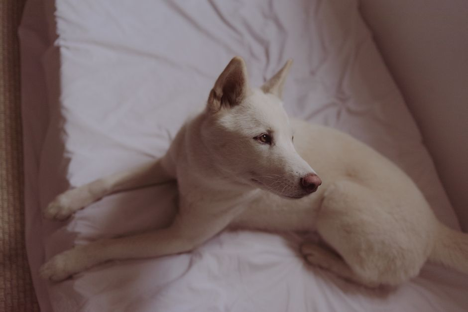

Minor Dog Wounds: What You Can Do at Home and When to Call the Vet

Photo: Jessika Arraes / Pexels
Dogs scrape paws, scratch themselves on branches and nick their skin while playing. Some small wounds can be cleaned at home, but many need a vet even when they look minor. This guide covers what is safe to do first and the signs that mean you should call the clinic.
1. Stay calm and protect yourself
A dog in pain may snap, even at someone it loves. Move slowly, speak softly and, if needed, ask a second person to hold the dog gently while you look. If the dog is aggressive or the wound is serious, do not try to treat it yourself.
2. Stop the bleeding
Press a clean cloth or gauze firmly on the wound for several minutes without lifting it to check. If blood soaks through, add more cloth on top rather than removing the first layer. Bleeding that does not slow down after about 10 minutes needs a vet right away.
3. Rinse the wound
Once bleeding has stopped, rinse gently with clean lukewarm water or a sterile saline solution to remove dirt. Do not use hydrogen peroxide, rubbing alcohol or human creams and ointments: they can damage tissue and slow healing. Dab the area dry with a clean cloth.
4. Cover it loosely
A clean, non-stick pad held with a light wrap protects a wound on a leg or paw. The bandage must never be tight: check that the toes are not swollen or cold, and change it if it gets wet or dirty. A wound on a spot that cannot be covered can be left open if the dog is stopped from licking it.
5. Stop licking and chewing
Licking spreads germs and reopens wounds. Ask your vet about a protective cone or recovery collar, which is often the best way to keep a dog away from a wound.
6. Check it twice a day
Look for increasing redness, swelling, heat, a bad smell or pus. These signs mean infection and call for a vet visit.
When to call the vet the same day
- deep or gaping wounds, or wounds that go through the skin;
- any bite wound, even if it looks small;
- a wound caused by a sharp object that may still be inside it;
- wounds near the eyes, on the chest or abdomen, or over a joint;
- a dog that limps badly, seems weak, runs a fever or stops eating.
What not to give
Never give your dog human pain relievers or any leftover medicine. Many are poisonous to dogs, and the right choice and amount depend on the dog. If your dog seems to be in pain, call your vet, who will decide what to prescribe.
Be prepared
Keep sterile gauze, non-stick pads, a self-adhesive wrap, saline solution and your clinic's phone number together in one place. Knowing where they are makes a stressful moment easier.
Recommended products
As an Amazon Associate, I earn from qualifying purchases.